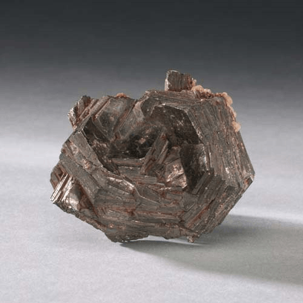
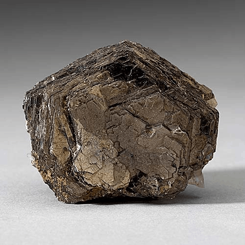

Pyrrhotite - Fe7S8
Sulfides



Habit: Generally massive or granular habit, but can form pseudohexagonal crystals. Bronze, bronze-yellow to brown tarnishes on exposure to air. Opaque, Metallic Luster.
Environment: Mainly in silica-poor igneous rocks, and as an accessory mineral in metamorphic rocks, and in sedimentary rocks. Commonly associated with pentlandite, pyrite, and quartz
Etymology: Named from the Greek for redness, in reference to its color. The second most common magnetic mineral.